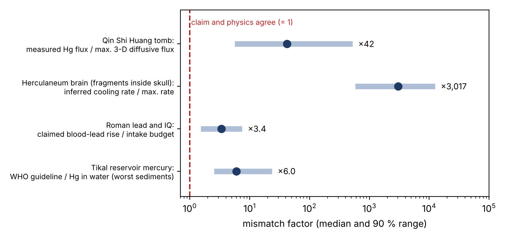

Draft v4 (census added; revised after an independent adversarial review), 2 November 2026
Archaeological science often moves from a measured quantity to a mechanism without checking whether the mechanism can run at the required rate. We call this rate blindness and measure how often it happens.
We took every open-access Scientific Reports paper from 2020–2025 with “archaeolog”, ”ancient”, ”prehistoric” or ”archaeometr” in the title (225 papers). The screening protocol was pre-registered before any paper was read. For each paper whose conclusion relies on a physical, chemical or biological mechanism of checkable magnitude, we computed the relevant transport, heat, storage, intake or reaction limit from the paper’s own numbers, with Monte Carlo ranges. Every case that did not pass was recalculated with independent code.
Main results:
We complement the census with six detailed audits of widely publicised claims, including a mercury flux from the Qin Shi Huang tomb 42× above the diffusive limit, a “glass brain” cooling rate 600–12,500× faster than conduction inside a skull allows, and a Roman-lead IQ effect overstated 2–3×. Each comes with a falsifiable test.

Archaeological science often argues from stocks: how much mercury is in a tomb, what glass-transition temperature a material shows, how much water a catchment provides, how much lead a sediment holds. But a mechanism also needs a flux on the stated time scale, and every flux has a ceiling:
The check is cheap. Identify the flux the mechanism requires, compute its ceiling with the paper’s own geometry, and report the ratio.
Protocol. Corpus: Europe PMC query
JOURNAL:"Sci Rep" AND (TITLE:archaeolog* OR TITLE:ancient OR TITLE:prehistoric OR TITLE:archaeometr*) AND OPEN_ACCESS:y AND PUB_YEAR:[2020 TO 2025],
giving 225 papers.
| k / n | % (95% CI, Clopper–Pearson) | |
|---|---|---|
| Applicable | 21 / 225 | 9% (6–14%) |
| Fail or conditional | 9 / 21 | 43% (22–66%) |
| Fail | 3 / 21 | 14% (3–36%) |
| Pass | 10 / 21 | 48% (26–70%) |
| Sensitivity: including 11 borderline papers, fail or conditional | 10 / 32 | 31% (16–50%) |
The nine non-passing papers:
Previously published? We searched for prior quantitative critiques of each of the nine and found none.
Scope. The census covers one journal over six years. The rate applies to that population and is an empirical prompt, not a field-wide estimate.
Negative result. A second pre-registered audit of 40 further papers tested a “scale dogma”: lab-specimen results transferred to real objects without dimensional similarity (Fourier or Damköhler numbers). Only 3 papers were applicable, and none changed its conclusion under scaling. The scale problem exists in individual cases (Section 3.2) but is not common in this corpus.
These six widely publicised claims were selected because they looked vulnerable, before the census. Two of them (Tikal mercury and the Tikal filter) are also in the census corpus.
Claim. Zhao et al. (Sci. Rep. 10, 10414, 2020) measured atomic mercury above the mound by differential-absorption lidar. They estimated an outflux of ≈5×10⁻⁸ kg s⁻¹ and wrote that mercury “may be escaping through cracks”. The chamber ceiling lies ≈30 m below the surrounding ground, under a ≈50 m mound.
Test.
Caveats.
Predictions (pre-registered).
Claim. Giordano et al. (Sci. Rep. 15, 5955, 2025) measured calorimetric onsets of 420 °C at 0.42 K s⁻¹ and 510 °C at 1000 K s⁻¹ on glassy fragments “sampled intact, directly from within the skull”. They inferred a natural fictive temperature T_f ≈ 510 °C and cooling “at rates comparable with our experimental 1000 K s⁻¹” after a short-lived ash cloud.
Test.
Prior work. Morton-Hayward et al. (2020) questioned the temperatures and the survival of fatty acids in the first report; they did not address cooling rates.
Test proposed. Upscans after the first one show no events. The natural T_f should therefore be measured from first-scan onsets on fresh fragments at several heating rates, compared with reference tissue glasses of known cooling history.
Claim. McConnell et al. (PNAS 122, e2419630121, 2025) model +1.04 ng m⁻³ of air lead over Europe. They apply BLL = exp[1.932 + 0.140 ln(PbA)] from Richmond-Bryant et al. (2014; NHANES III, unadjusted). They obtain a 2.0–5.3 µg dl⁻¹ “enhancement”, which they add to a 1 µg dl⁻¹ Neolithic baseline, and hence a deficit of 2.5–3 IQ points.
Test.
The effect is plausible, but 2–3× smaller than claimed for the European average.
Claim. Lentz et al. (Sci. Rep. 10, 10316, 2020) report sediment mercury above the “toxic effect threshold” of 1 µg g⁻¹, a criterion for benthic organisms. They conclude that the reservoirs were “seriously compromised as sources of drinking water” and that the elite were “fed foods laced with mercury at every meal”.
Test.
Djoser (Landreau et al., PLOS ONE 19, e0306690, 2024). We ran a daily water balance with the authors’ storage elements, demand, evaporation and infiltration. The lift receives 7–34% of its demand with ≤2 floods per year. It receives ~80–100% with frequent floods or near-perennial flow, which the authors propose. O. Siegel had objected qualitatively that the basin “could not have held enough water from occasional rains”. Our result makes that objection quantitative and shows it depends on the flood regime. Test: do 3rd-Dynasty sediments in the Abusir wadi show frequent or continuous flow, or isolated floods separated by aeolian layers?
Tikal filter (Tankersley et al., Sci. Rep. 10, 18021, 2020). Passing the reservoir volume (58,000 m³ yr⁻¹) through a slow filter needs ~550–2,300 m² if storm water arrives directly. It needs only ~34–200 m² if water ponds behind the dry-laid walls of the authors’ own scheme. Seasonal drying of the biological layer remains a qualitative concern.
What the census measures. Most archaeological-science papers in the corpus (91%) cannot suffer rate blindness, because they measure composition, DNA, form or age directly. Among the 9% that infer a mechanism of checkable magnitude, about four in ten (22–66%) do not survive an order-of-magnitude check made with their own numbers unless an unstated assumption is added. One in seven fails outright. The checks are cheap, typically one page of arithmetic, and none of the nine had been published.
The census is limited to one journal, and the classification involves judgement. We counter this with pre-registration, independent screening, independent recalculation and a sensitivity analysis that includes the borderline papers (31%, CI 16–50%).
Hand-picked cases. Of the six selected cases, four fail and two are conditional. Five further hand-picked claims passed or could not be decided with public data:
What the census adds is the measured rate: rate checks change conclusions often enough in an ordinary, unselected corpus to be worth making routine for mechanism claims.
Our own drafts illustrate the point. An independent adversarial review of this work found:
All of these are corrected here. Rate checks need the same scrutiny as the claims they test.
All calculations, Monte Carlo inputs and figures are open:
simulador/qin_mercurio.py,
simulador/qin_presion_prerregistro.py;simulador/herculano_vidrio.py;simulador/saqqara_balance_hidrico.py;simulador/plomo_romano.py;simulador/tikal_filtro.py,
simulador/tikal_mercurio.py;simulador/paleosuelo_radiocarbono.py,
simulador/cal_organica.py,
simulador/censo/*.py;auditoria_aleatoria/
(PROTOCOLO.md, corpus.csv, muestra.csv, censo.csv,
RESULTADO*.md);resultados/42–55_*.json.The pre-registered predictions are P15 and P16 in
PREDICCIONES.md.
Census papers that did not pass (Scientific Reports; PMCID): - Shivakumar et al. 2021, 11:13261 (PMC8225893); - Forti et al. 2023, 13:7683 (PMC10195873); - Lentz et al. 2020, 10:10316 (PMC7316703); - Tankersley et al. 2020, 10:18021 (PMC7582844); - Broz et al. 2023, 13:7476 (PMC10167333); - Watanabe et al. 2021, 11:23290 (PMC8639971); - PMC8160351 (Roman glass metal inclusions, 2021); - PMC11109126 (Lajia earthquake mudflow, 2024); - PMC11760916 (hair 25(OH)D3, 2025).
Other references: - Giordano, G. et al. Unique formation of organic glass from a human brain in the Vesuvius eruption of 79 CE. Sci. Rep. 15, 5955 (2025). - Landreau, X. et al. On the possible use of hydraulic force to assist with building the step pyramid of Saqqara. PLOS ONE 19, e0306690 (2024). - Lentz, D. L. et al. Molecular genetic and geochemical assays reveal severe contamination of drinking water reservoirs at the ancient Maya city of Tikal. Sci. Rep. 10, 10316 (2020). - McConnell, J. R. et al. Pan-European atmospheric lead pollution, enhanced blood lead levels, and cognitive decline from Roman-era mining and smelting. PNAS 122, e2419630121 (2025). - Millington, R. J. & Quirk, J. P. Permeability of porous solids. Trans. Faraday Soc. 57, 1200–1207 (1961). - Morton-Hayward, A. L. et al. A conscious rethink: why is brain tissue commonly preserved in the archaeological record? STAR 6, 87–95 (2020). - Moynihan, C. T. et al. Dependence of the fictive temperature of glass on cooling rate. J. Am. Ceram. Soc. 59, 12–16 (1976). - Richmond-Bryant, J. et al. The influence of declining air lead levels on blood lead–air lead slope factors in children. Environ. Health Perspect. 122, 754–760 (2014). - Bower, B. Was Egypt’s first pyramid built with hydraulics? Science News, 5 August 2024 (O. Siegel quoted). - Tankersley, K. B. et al. Zeolite water purification at Tikal, an ancient Maya city in Guatemala. Sci. Rep. 10, 18021 (2020). - WHO. Mercury in drinking-water (chemical fact sheet, 2022). - Zhao, G. et al. Mercury as a geophysical tracer gas — emissions from the emperor Qin tomb in Xi’an studied by laser radar. Sci. Rep. 10, 10414 (2020).